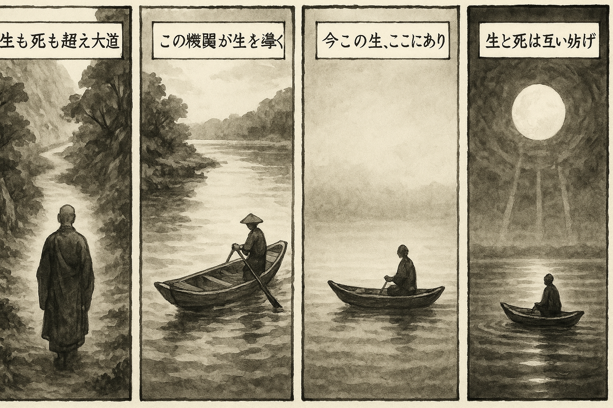

七十五巻 巻一覧
正法眼藏第22 全機
本ページの導入・語彙・深掘り・クイズは tools/regen_volume_intro_from_corpus.py が OpenAI API で生成したものです（入力は当巻冒頭原文の抜粋）。内容はモデル出力のため、重要箇所は必ず原文・教本と照合してください。
出典: https://shomonji.or.jp/zazen/doc/genzou.html
（ローカル生成の全文: 全文ページ）
この巻の位置（導入）
諸佛の大道、その究盡するところ、透脱なり、現成なり。その透脱といふは、あるいは生も生を透脱し、死も死を透脱するなり。このゆゑに、出生死あり、入生死あり。ともに究盡の大道なり。
生は來にあらず、生は去にあらず。生は現にあらず、生は成にあらざるなり。しかあれども、生は全機現なり、死は全機現なり。しるべし、自己に無量の法あるなかに、生あり、死あるなり。
語彙の足場
- 透脱：物事の本質を見抜き、執着から解放されること。生や死を超えた状態を指す。
- 現成：物事がそのままの形で現れること。生や死が現れる様子を示す。
- 機關：生や死の状態を生じさせる根本的な要因や条件。
- 全機現：生や死の全ての側面が同時に現れること。
本文（冒頭・抜粋）
出典はリポジトリ内 doc/正法眼蔵.txt です。原文の参照元: https://shomonji.or.jp/zazen/doc/genzou.html
諸佛の大道、その究盡するところ、透脱なり、現成なり。その透脱といふは、あるいは生も生を透脱し、死も死を透脱するなり。このゆゑに、出生死あり、入生死あり。ともに究盡の大道なり。捨生死あり、度生死あり。ともに究盡の大道なり。現成これ生なり、生これ現成なり。その現成のとき、生の全現成にあらずといふことなし、死の全現成にあらずといふことなし。
この機關、よく生ならしめよく死ならしむ。この機關の現成する正當恁麼時、かならずしも大にあらず、かならずしも小にあらず。遍界にあらず、局量にあらず。長遠にあらず、短促にあらず。いまの生はこの機關にあり、この機關はいまの生にあり。
生は來にあらず、生は去にあらず。生は現にあらず、生は成にあらざるなり。しかあれども、生は全機現なり、死は全機現なり。しるべし、自己に無量の法あるなかに、生あり、死あるなり。
しづかに思量すべし、いまこの生、および生と同生せるところの衆法は、生にともなりとやせん、生にともならずとやせん。一時一法としても、生にともならざることなし、一事一心としても、生にともならざるなし。
生といふは、たとへば、人のふねにのれるときのごとし。このふねは、われ帆をつかひわれかぢをとれり。われさををさすといへども、ふねわれをのせて、ふねのほかにわれなし。われふねにのりて、このふねをもふねならしむ。この正當恁麼時を功夫參學すべし。この正當恁麼時は、舟の世界にあらざることなし。天も水も岸もみな舟の時節となれり、さらに舟にあらざる時節とおなじからず。このゆゑに、生はわが生ぜしむるなり、われをば生のわれならしむるなり。舟にのれるには、身心依正、ともに舟の機關なり。盡大地、盡虛空、ともに舟の機關なり。生なるわれ、われなる生、それかくのごとし。
圜悟禪師克勤和尚云、生也全機現、死也全機現。
この道取、あきらめ參究すべし。參究すといふは、生也全機現の道理、はじめをはりにかかはれず、盡大地盡虛空なりといへども、生也全機現をあひ罣礙せざるのみにあらず、死也全機現をも罣礙せざるなり。死也全機現のとき、盡大地盡虛空なりといへども、死也全機現をあひ罣礙せざるのみにあらず、生也全機現をも罣礙せざるなり。このゆゑに、生は死を罣礙せず、死は生を罣礙せざるなり。盡大地盡虛空、ともに生にもあり、死にもあり。しかあれども、一枚の盡大地、一枚の盡虛空を、生にも全機し、死にも全機するにはあらざるなり。一にあらざれども異にあらず、異にあらざれども卽にあらず、卽にあらざれども多にあらず。このゆゑに、生にも全機現の衆法あり、死にも全機現の衆法あり。生にあらず死にあらざるにも全機現あり。全機現に生あり、死あり。このゆゑに、生死の全機は、壯士の臂を屈伸するがごとくにもあるべし。如人夜間背手摸枕子にてもあるべし。これに許多の神通光明ありて現成するなり。
正當現成のときは、現成に全機せらるるによりて、現成よりさきに現成あらざりつると見解するなり。しかあれども、この現成よりさきは、さきの全機現なり。さきの全機現ありといへども、いまの全機現を罣礙せざるなり。このゆゑにしかのごとくの見解、きほひ現成するなり。
正法眼藏全機第二十二
于時仁治三年壬寅十二月十七日在雍州六波羅蜜寺側前雲州刺史幕下示衆
同四年癸卯正月十九日書寫之 懷弉
図解（4コマ・AI生成）
教義の根拠は本文・出典に従い、漫画は比喩の補助に留めてください。

深掘り（読解の手掛かり）
- 生と死は互いに影響を与えず、独立して存在する。
- 生は現在の状態であり、過去や未来に依存しない。
- 全機現は生と死の両方において成立する概念である。
確認（形成評価）
各設問の下の「採点」で正誤を表示します（ブラウザ内のみ。ログは送りません）。